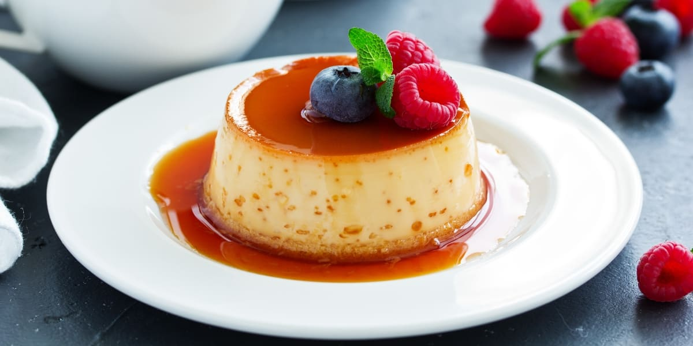
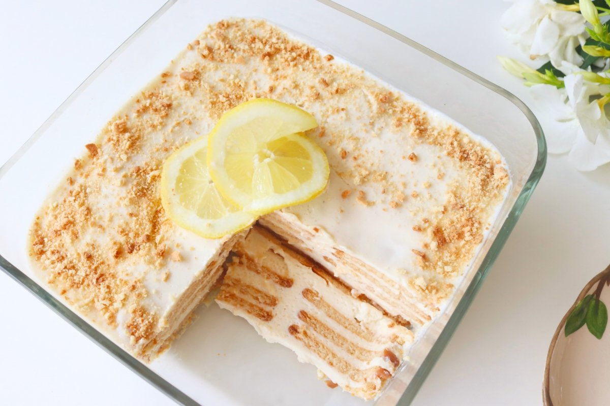
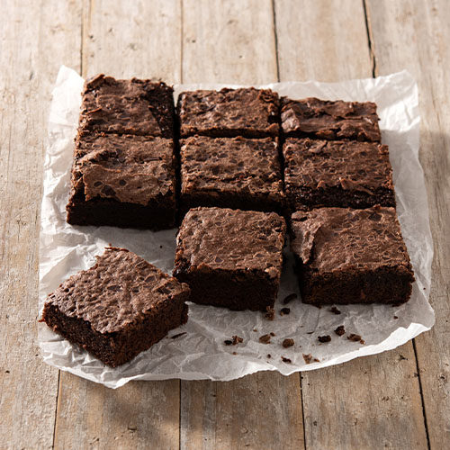
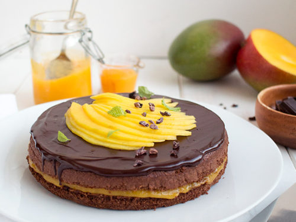
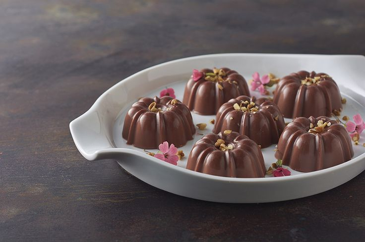
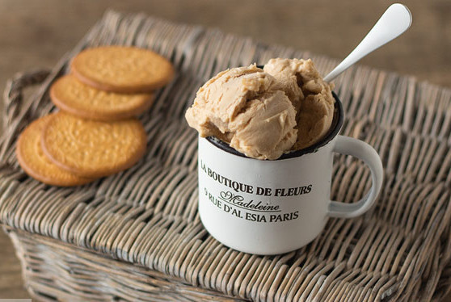
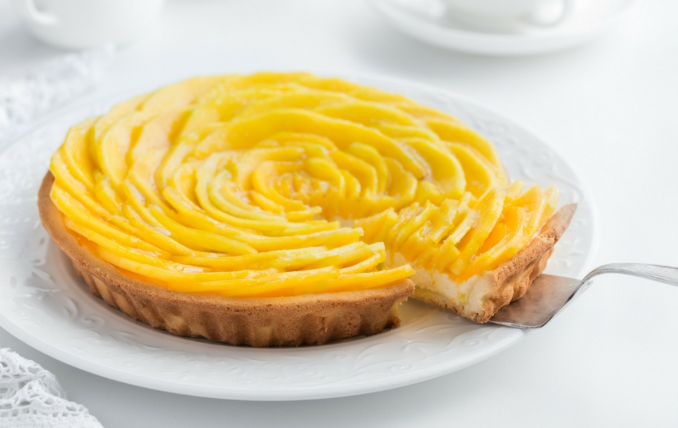
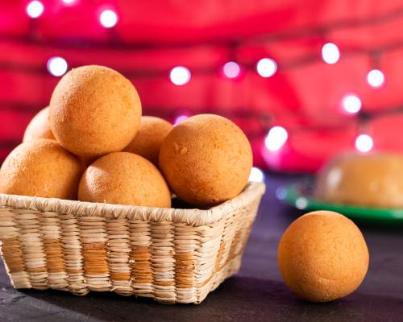
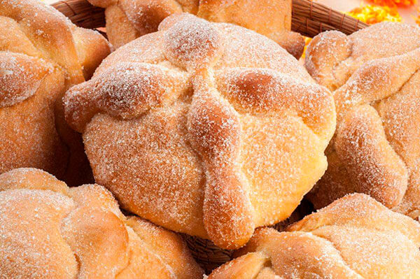
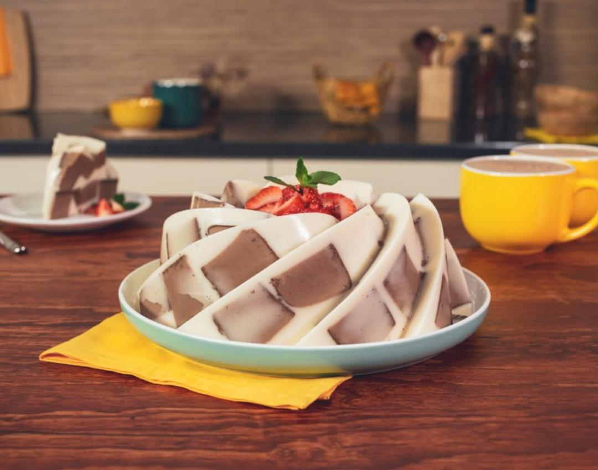

Nuestras Recetas
Bienvenidos a nuestra sección de recetas, donde el arte de la repostería cobra vida. En Postres Deliciosos, nos apasiona compartir sabores irresistibles y experiencias culinarias inolvidables. Desde clásicos reconfortantes hasta creaciones innovadoras, nuestras recetas están diseñadas para deleitar y sorprender a todos los amantes de los postres. Con ingredientes simples, instrucciones claras y consejos útiles, te guiaremos en un viaje culinario lleno de dulzura y creatividad. Prepárate para descubrir nuevas delicias y llevar tus habilidades en la cocina al siguiente nivel. ¡Vamos a cocinar juntos!
Pastel de fresa
Un delicioso pastel de fresa. ¡Perfecto para cualquier ocasión!

Ingredientes:
- 2 Tazas Crema para batir
- 2 Barras Mantequilla 90 g c/u
- 4 Piezas Huevo
- 2 Tazas Harina de trigo
- 1 Cucharadita Polvo para hornear
- 1 Cucharada Esencia de vainilla
- 2 Tazas Fresa lavadas, desinfectadas y cortadas en cuadritos; y unas para decorar
- 2 Latas Leche Condensada
Instrucciones:
1. Pre-calentar el horno a 180°C
2. Bate la mantequilla hasta que esté cremosa; agrega 1 lata de Leche Condensada e incorpora poco a poco los huevos. Sigue batiendo y agrega la harina de trigo, el polvo para hornear y la esencia de vainilla.
3. Vacía la mezcla en un molde, previamente engrasado y enharinado, hornea por 40 minutos o hasta que al introducir un palillo éste salga limpio. Desmolda y deja enfriar; una vez frío, corta a lo largo, en 3 partes iguales.
4. Para la cobertura, bate la crema hasta que se formen picos e incorpora poco a poco la Leche Condensada hasta que esponje y esté firme. Para formar el pastel, en una capa de pastel agrega un poco de crema batida con algunas fresas cortadas en cuadritos, tapa con otra capa de pastel y cubre nuevamente de crema para batir y fresas en cuadritos. Tapa con la última capa de pastel, cubre con el resto de la crema y decora con las fresas.
Flan Napolitano
Aprende a preparar un clásico de los postres ¡FLAN NAPOLITANO!

Ingredientes:
- 3/4 De taza de azúcar refinada
- 1 Lata de Leche Condensada
- 1 Lata de Leche Evaporada
- 1 Paquete de queso crema a temperatura ambiente (190 g)
- 5 Huevos
- 1 Cucharada de esencia de vainilla
Instrucciones:
1. Horno precalentado a 180 °C.
2. Vierte el azúcar en una flanera y calienta a fuego medio para que se forme el caramelo; ladea con cuidado el molde para cubrir la superficie y las paredes.
3. Licúa la Leche Condensada con la Leche Evaporada, el queso crema, los huevos y la esencia de vainilla. Vierte la preparación en la flanera y tapa con papel aluminio sellando las orillas. Coloca en un recipiente y cocina a baño María en el horno a 180 °C durante 1 1/2 horas.
4. Retira del fuego y deja enfriar por completo; desmolda y sirve.
Carlota de Limón
¡De nuestros postres mas sencillos y deliciosos para hacer en casa!

Ingredientes:
- 1 Lata de Leche Condensada
- 1 Lata de Leche Evaporada
- 1/4 Taza de Jugo de limón colado
- 30 Galletas Marías
- 1 Limón cortado en rodajas
- 5 Galletas Marías troceadas
- 1 Rama de Menta desinfectada
- 1 Limón (su ralladura)
Instrucciones:
1. Licúa la Leche Condensada con la Leche Evaporada y sin dejar de licuar, agrega poco a poco el jugo de limón.
2. En un refractario cuadrado, coloca una capa de galletas, un poco de la mezcla de limón y repite hasta terminar con el resto de los ingredientes. Cubre con plástico adherente y refrigera por 1 hora o hasta que esté firme.
3. Decora con las rodajas de limón, las galletas troceadas, las hojas de menta y la ralladura de limón. Ofrece.
Brownie
¡Delicioso Brownie casero, no te arrepentiras!

Ingredientes:
- 1/4 Taza de Leche Condensada
- 1 Huevo
- 3/4 Taza de Alimento en Polvo para Preparar Bebida Sabor a Chocolate
- 2/3 Taza de Harina de trigo pasada por un colador
- 1/2 Cucharadita de Polvo para hornear
- 1/2 Taza de Frambuesas
- 1/4 Taza de Azúcar glass
- 6 Hojas de Menta fresca desinfectadas
Instrucciones:
1. Horno precalentado a 180 °C.
2. Mezcla la mantequilla con la Leche Condensada, el huevo, el Alimento en Polvo para Preparar Bebida Sabor a Chocolate, la harina y el polvo para hornear hasta integrar por completo.
3. Vierte en un molde cubierto con papel encerado y hornea a 180 °C de 25 a 30 minutos; deja enfriar. Desmolda, corta en cuadros, decora con las frambuesas, el azúcar glass y las hojas de menta.
4. Ofrece.
Pastel de Mango con Chocolate
¡Prueba un postre diferente con esta receta de PASTEL de MANGO con CHOCOLATEQ

Ingredientes:
- 1/2 Barra de mantequilla fundida (45 g)
- 30 Galletas de chocolate con relleno molidas
- 3/4 De taza de Chocolate
- 1 Lata de Leche Evaporada
- 1/2 Taza de agua
- 3 Sobres de grenetina (7 g c/u), hidratados en 1 taza de agua y disueltos a baño María
- 1 1/2 Taza de pulpa de mango
- 1 Bolsita de Leche Condensada
- 3 Sobres de grenetina (7 g c/u), hidratados en ½ taza de agua y disueltos a baño María
Instrucciones:
1. Para la base, mezcla la mantequilla con las galletas, vacía en un aro forrado con papel aluminio y cubre el fondo con la mezcla de galleta. Refrigera por 20 minutos.
2. Para la capa de chocolate, licúa el Chocolate, la Leche Evaporada, 3 sobres de grenetina y el agua. Vierte la mezcla sobre el molde y refrigera por 30 minutos.
3. Para la capa de mango, licúa la pulpa de mango con la Leche Condensada y la grenetina restante. Vierte la mezcla sobre el molde y refrigera hasta que esté firme. Sirve y disfruta.
Mini Gelatinas de Chocolate
¡Prepara estas deliciosas gelatinas, perfectas para cualquier ocasión!

Ingredientes:
- 1 Taza de Chocolate en polvo
- 1 Lata de Leche Evaporada
- 4 Sobres de grenetina (7 g c/u) hidratada en 1 taza de agua y disuelta a baño María
- 2 Tazas de agua
Instrucciones
1. Licúa el Chocolate en polvo con la Leche Evaporada, la grenetina y el agua.
2. Vierte la mezcla en moldes individuales para gelatina ligeramente engrasados y refrigera hasta que cuajen.
3. Desmolda y disfruta.
Helado de Galletas Marías
¡Una idea perfecta para dias calurosos, prepara este cremoso helado con nosotros!

Ingredientes:
- 1 Lata de Leche Condensada
- 1 Lata de Leche Evaporada
- 2 Tazas de agua
- 1 Paquete de galletas Marías desinfectada (170 g)
- 8 Galletas Marías
- 1 Taza de frutos rojos
- 8 Hojas de menta desinfectada
Instrucciones
1. Licúa la Leche Condensada, la Leche Evaporada, el agua y el paquete de Galletas Marias.
2. Vierte la mezcla en un refractario, cubre con plástico adherente y congela por 2 horas. Retira del congelador y con ayuda de una cuchara mézclalo nuevamente; congela por 1 hora y repite el proceso por lo menos 2 veces más.
3. Sirve, decora con las Galletas Marias restantes, los frutos rojos y las hojas de menta; ofrece.
Pay de Mango
¡Aprovecha la temporada y prepara este PAY de MANGO!

Ingredientes:
- 30 Galletas Marías molidas
- 1 Barra de mantequilla derretido (90 g)
- 1 Lata de Leche Condensada
- 3 Mangos
- 1 1/2 Sobres de grenetina (7 g c/u), hidratada en ¼ taza de agua y disuelta a baño María
Instrucciones
1. Para la base, mezcla las galletas con la mantequilla hasta formar una pasta, coloca en un molde para pay, cubre la base y los bordes con la pasta de galleta y refrigera durante 10 minutos.
2. Para el relleno, licúa la Leche Condensada con el mango y con la licuadora encendida agrega la grenetina.
3. Vierte sobre la base de galleta y refrigera hasta que cuaje por completo.
Arroz con Leche
¡Uno de los populares mas fáciles de hacer!

Ingredientes:
- 4 1/2 Tazas de agua
- 1 Raja de canela
- 1 Taza de arroz, remojado en agua caliente por 20 minutos y escurrido
- 1 Lata de Leche Condensada
- 1 Lata de Leche Evaporada
- 1/2 Taza de pasas
- 1 Cucharada de canela, molida
Instrucciones
1. Calienta el agua con la canela y cuando suelte el hervor, agrega el arroz; cocina durante 15 minutos o hasta que el arroz esté tierno.
2. Vierte la Leche Condensada, la Leche Evaporada y las pasas; mezcla y continúa la cocción a fuego bajo de 20 a 25 minutos hasta que espese ligeramente.
3. Sirve tibio o frío y espolvorea con canela molida.
Buñuelos
la receta clásica de buñuelos para que disfrutes con un desayuno dulce

Ingredientes:
- 1 huevo
- 1½ tazas de harina de trigo (210 gramos)
- ½ taza de azúcar (100 gramos)
- 1 cucharadita de polvos de hornear o levadura química tipo Royal
- 250 centímetros cúbicos de leche
- 1 cucharadita de esencia de vainilla
- 1 pizca de sal
- aceite para freír
- azúcar impalpable para decorar
Instrucciones
1. Tamiza en un bol la harina con la sal, el polvo de hornear (levadura en polvo) y el azúcar.
2. Incorpora la leche y el huevo poco a poco y ve mezclando hasta conseguir una masa homogénea.
3. Añade la esencia de vainilla para proporcionar un toque de aroma y sabor.
4. Ahora que ya tienes la masa de los buñuelos lista, calienta una olla con suficiente aceite. Es importante que los buñuelos floten en el aceite, así que procura calentar la cantidad necesaria. Cuando esté bien caliente, ve añadiendo porciones de masa con ayuda de un cucharón y fríe los buñuelos hasta que se doren por un lado y por otro, durante unos 2-3 minutos máximo.
5. Retira los buñuelos y resérvalos en un plato con papel absorbente para eliminar el exceso de aceite y, si quieres, cúbrelos con un poco de azúcar impalpable para decorar.
Pan de Muerto
Aprende a preparar este clásico de la temporada de día de muertos

Ingredientes:
- 1 1/2 Tazas de harina de trigo pasada por un colador
- 2/3 De taza de Leche Evaporada
- 1 Sobre de levadura (11 g c/u)
- 3 Tazas de harina de trigo pasada por un colador
- 1 Taza de azúcar
- 1/3 De taza de Leche Evaporada
- 4 Huevos
- 1 Cucharada de agua de azahar
- 1 Barra Mantequilla a temperatura ambiente (90 g c/u)
- 1/4 De taza de agua
- 1 Barra de mantequilla fundida
- 2 Tazas de azúcar
Instrucciones
1. Horno precalentado a 180 °C.
2. Para la esponja, mezcla 1 ½ tazas de harina de trigo con 2/3 de Leche Evaporada y 1 sobre de levadura, deja reposar por 1 hora en un lugar tibio hasta que doble su volumen.
3. Forma una fuente con la harina restante y 1 taza de azúcar, vierte en el centro la esponja, 1/3 taza de Leche Evaporada, 1 sobre de levadura, los huevos y el agua de azahar. Mezcla todos los ingredientes hasta formar una masa.
4. Amásala y golpéala contra la mesa hasta que esté tersa, elástica y no se te pegue en los dedos.
5. Agrega 2 barras de mantequilla y continúa amasando hasta integrar por completo, colócala en un recipiente grande engrasado, cubre con plástico adherente y déjala reposar en un lugar tibio hasta que doble su volumen.
6. Reserva una cuarta parte de la masa para formar los huesos. Divide en 13 partes iguales 80 g c/u y forma bolitas, colócalas en charolas engrasadas y enharinadas, cubre con plástico adherente y déjalas reposar en un lugar tibio hasta que doblen su volumen.
7. Con la masa que reservaste forma 26 tiras para los huesitos de 10 g c/u y 13 bolitas de 5 g c/u, colócalos en una charola con papel encerado, cubre con plástico adherente y refrigera.
8. Para formar el pan de muerto, con el agua barniza ligeramente donde irán los huesos para que estos se adhieran, coloca dos huesitos cruzados sobre los panes que formaste y en la parte superior barniza con otro poco de agua, coloca una bolita para simular el cráneo. Hornea a 180 °C de 20 a 25 minutos.
9. Mientras el pan aún está caliente, barnízalos con la mantequilla fundida y espolvorea los panes con el azúcar restante; deja enfriar.
Gelatina de Chocolate con 3 Leches
La cremosidad y combinación de sabores la hacen DELICIOSA.

Ingredientes:
- 1 Taza de Chocolate
- 1 Lata de Leche Evaporada
- 3 Sobres de grenetina (7 g c/u), hidratados en 1 taza de agua y disueltos a baño María
- 1 Lata de Leche Condensada
- 1 Lata de Media Crema
- 3 Sobres de grenetina (7 g c/u), hidratados en 1 taza de agua y disueltos a baño María
Instrucciones
1. Para la gelatina de chocolate, licúa el Chocolate, la Leche Evaporada y 3 sobres de grenetina. Vierte la mezcla en un refractario previamente engrasado y refrigera hasta que cuaje.
2. Para la gelatina 3 leches, licúa la Leche Condensada con la Media Crema, la Leche Evaporada y 3 sobres de grenetina.
3. Corta la gelatina de chocolate en cuadros y colócalos en un molde para gelatina ligeramente engrasado. Vierte la gelatina de 3 leches y refrigera hasta que cuaje. Desmolda la gelatina y disfruta.
¡Esperamos que hayas disfrutado de estas deliciosas recetas de postres tanto como nosotros disfrutamos compartiéndolas contigo! Desde clásicos reconfortantes hasta creaciones innovadoras, exploramos el dulce mundo de los postres juntos. ¿Listo para llevar tus habilidades culinarias al siguiente nivel? No dudes en explorar más en nuestra página para descubrir nuevas recetas, consejos útiles y trucos de expertos. ¡Y no olvides compartir tus creaciones con nosotros en las redes sociales! ¡Hasta la próxima aventura culinaria!